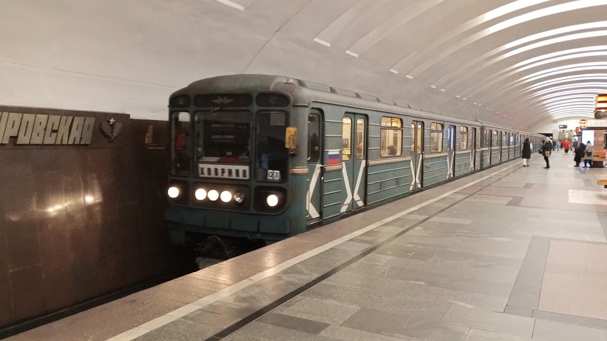
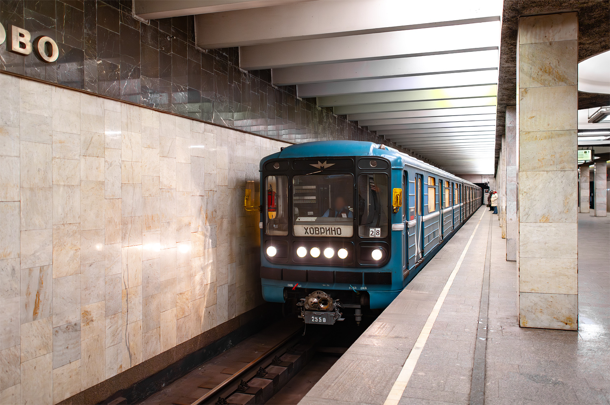

Вагон №2550
Вагон 2550 был построен в мае 1996 года на МВЗ (ныне ТМХ). За свою историю он сменил несколько депо и прошёл капитальный ремонт. Недавно вагон потерял свою уникальную маску — теперь из интересных особенностей осталось только жёлтое освещение.
Общая информация
📅 Постройка
Май 1996
Модель: 81-717.5М (МВМ)
Завод-изготовитель: МВЗ (ныне ТМХ)
📍 Текущее местонахождение
ТЧ-17 «Южное»
Линия: Замоскворецкая (ЗЛ)
Назначение: Пассажирский
Статус: Эксплуатируется
История депо
| Депо | Период | Примечание |
|---|---|---|
| ТЧ-10 «Свиблово» | 05.1996 — 06.2016 | Поступление |
| ТЧ-13 «Черкизово» | 06.2016 — 03.2018 | |
| ТЧ-15 «Печатники» | 03.2018 — 04.2019 | |
| ТЧ-19 «Лихоборы» | 04.2019 — 01.2022 | |
| ТЧ-17 «Южное» | 01.2022 — 02.2023 | |
| ТЧ-5 «Калужское» | 02.2023 — 09.05.2023 | |
| ТЧ-17 «Южное» | 09.05.2023 — 04.2025 | |
| ТЧ-17 «Южное» | 04.2025 — 28.05.2025 | Вагон для перегонок |
| ТЧ-17 «Южное» | ≥ 29.05.2025 | Эксплуатируется |
Важные даты:
• 30.06.2015 — капитальный ремонт на ОЭВРЗ
• 04.2025 — 28.05.2025 — вагон для перегонок
Экстерьер
Окраска
- Бирюзового цвета с белыми полосами по борту
Компоновка фар
- 1-4-1
Бывшие особенности (06.2015 — 01.2026)
- ❌ Окантовка маски окрашена в цвет кузова
- ❌ Рисунок изгиба на двери в кабину совпадал с рисунком на дверях в салон
⚠️ Утрачено в 2026 году
Текущие особенности
- ✅ Три ребра жёсткости
- ✅ Вертикальное расположение сигнальных ламп
Интерьер
Сиденья
- 05.1996 — 06.2015: диваны, обшитые кожзаменителем
- С 06.2015: антивандальные сиденья коричневого цвета с ортопедической спинкой
Пластик
- 05.1996 — 06.2015: жёлтого цвета под дерево
- С 06.2015: пластиковые композитные панели
Освещение
- 05.1996 — 06.2015: лампы типа ЛПВ-02
- С 06.2015: световая линия жёлтого цвета ⭐
⭐ Единственная сохранившаяся особенность — жёлтое освещение, которое отличает этот вагон от других.
Поручни
- Вертикальные поручни
Эволюция изменений
| Элемент | До 06.2015 | 06.2015 — 01.2026 | С 2026 |
|---|---|---|---|
| Маска | Стандартная | Уникальная окантовка | Стандартная (утрачена) |
| Сиденья | Диваны | Коричневые антивандальные | Коричневые антивандальные |
| Пластик | Жёлтый "под дерево" | Композитные панели | Композитные панели |
| Освещение | ЛПВ-02 | Жёлтая световая линия | Жёлтая световая линия |
Фотогалерея

Вагон № 2550
Вагон 2550 с уникальной маской (до 2026 года).

Вагон № 2550 (текущий вид)
Вагон 2550 после потери уникальной маски (2026 год).
📸 Фото взяты с transphoto
Нажмите на фото для увеличения
«Вагон 2550 запомнился энтузиастам своей уникальной маской, которую он носил почти 11 лет. К сожалению, в 2026 году она была утрачена. Теперь только жёлтое освещение напоминает о былой уникальности этого вагона».